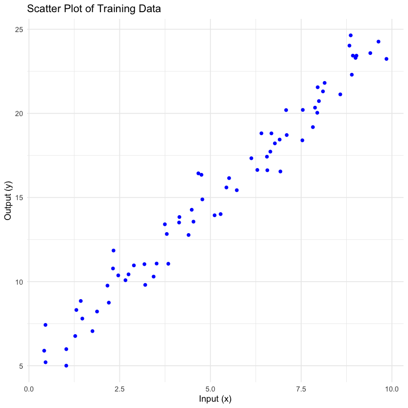
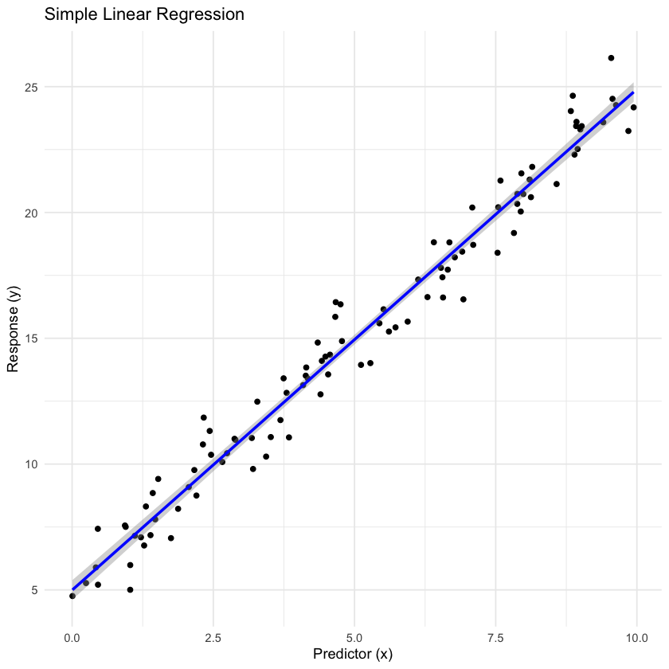

Many computing on data rely on R and Python as primary tools for statistical modeling and machine learning. While both languages offer powerful capabilities for creating and working with models, they employ distinct approaches to model creation and fitting. This blog post explores these differences, focusing on how models are instantiated and fitted in each language. The comparison will examine linear models with toy synthetic data.
R’s Approach: Implicit Fitting and S3 Classes
In R, model fitting is often implicit and occurs at the time of model creation. This is facilitated by R’s use of S3 classes, which are based on generic functions.
Understanding S3 Generic Functions
S3 is R’s first and most widely used object-oriented system. It’s based on generic functions, which provide a simple yet powerful way to implement polymorphism in R. Here’s how S3 generic functions work:
A generic function is a function that dispatches method calls to other functions, based on the class of the arguments passed to it.
When a generic function is called, R looks for a method that matches the class of the object passed as an argument.
If a matching method is found, it is called; otherwise, R looks for a default method.
Let’s look at an example using the print() function, which is a common S3 generic:
Code
# Define a new S3 classcreate_human <- function(name, age) { human <-list(name = name, age = age)class(human) <-"human"return(human)}# Define a method for the print genericprint.human <- function(x, ...) { cat("Human Attributes \n") cat("Name: ", x$name, "\n") cat("Age: ", x$age, "\n")}# Create an object and print itjohn <- create_human("John Doe", 30)print(john)
Human Attributes
Name: John Doe
Age: 30
In this example: - We define a new S3 class called “person”. - We create a method print.person() for the print() generic function. - When we call print(john), R recognizes that john is of class “person” and calls our print.person() method.
This system allows for intuitive and flexible implementation of methods for different classes. In the context of modeling, it enables R to provide a consistent interface for various model types while allowing for specialized behavior based on the specific model class.
S3 Classes for Models
R uses S3 classes for many of its modeling functions. Some examples include:
lm for linear models
glm for generalized linear models
rpart for decision trees
randomForest for random forest models
When you create a model object using these functions, you are actually creating an instance of an S3 class.
These classes come with predefined generic function methods for common operations like print(), summary(), and predict(), which behave differently depending on the model type.
Implicit Fitting
In R, when a model-type object is instantiated with a call, it is typically fitted automatically. Let’s look at linear model as a simple example.
But first we need some data, we’ll use a toy example - to illustrate the model fitting process, avoiding details such as:
Data cleaning
Input imbalance
Output imbalance
Multi-collinearity
Multiple features
Perfect separation
Imputation
Encoding
Feature scaling
Handling Outliers
We will need a split function to split the data into train-dev-test sets.
Code
split_data <- function(data, train_ratio =0.7, dev_ratio =0.15, test_ratio =0.15, seed =123) {# Check that the ratios sum to 1if (train_ratio + dev_ratio + test_ratio !=1) { stop("The sum of train_ratio, dev_ratio, and test_ratio must be 1.") }# Set seed for reproducibilityset.seed(seed)# Calculate the number of samples for each set n <- nrow(data) train_size <- floor(train_ratio * n) dev_size <- floor(dev_ratio * n)# Generate random indices for the training set train_indices <- sample(seq_len(n), size = train_size)# Generate random indices for the dev set from the remaining indices remaining_indices <- setdiff(seq_len(n), train_indices) dev_indices <- sample(remaining_indices, size = dev_size)# The remaining indices are for the test set test_indices <- setdiff(remaining_indices, dev_indices)# Split the data train_data <- data[train_indices, ] dev_data <- data[dev_indices, ] test_data <- data[test_indices, ]return(list(train = train_data, dev = dev_data, test = test_data))}
Code
generate_linear_data <- function(n =100, seed =123, slope =2, intercept =5, noise_sd =1) {# Set seed for reproducibilityset.seed(seed)# Generate predictor variable (x) x <- runif(n, min=0, max=10)# Generate response variable (y) with a linear relationship and some noise y <- intercept + slope * x + rnorm(n, mean =0, sd = noise_sd)# Create a dataframe data <- data.frame(x = x, y = y)return(data)}# Generate the datalinear_data <- generate_linear_data(n =100, seed =123, slope =2, intercept =5, noise_sd =1)# Display the first few rows of the datadf <- split_data(linear_data)head(df$train)
A data.frame: 6 x 2
x
y
<dbl>
<dbl>
31
9.6302423
24.266249
79
3.5179791
11.074102
51
0.4583117
5.206217
14
5.7263340
15.434093
67
8.1006435
21.306963
42
4.1454634
13.839324
Code
library(ggplot2)ggplot(df$train, aes(x = x, y = y)) + geom_point(color ="blue") + labs(title ="Scatter Plot of Training Data", x ="Input (x)", y ="Output (y)") + theme_minimal()

Now let’s work with the training data. We’ll fit a linear model to predict y based on x using the dev set. For completeless we have split out a test set to evaluate the model’s final performance if we had tuned on the dev set or compared against other models.
Linear Regression
Code
# Fit a simple linear regression modellm_model <- lm(y ~ x, data = df$train)# Summarize the modelsummary(lm_model)
Call:
lm(formula = y ~ x, data = df$train)
Residuals:
Min 1Q Median 3Q Max
-2.13378 -0.74871 -0.05242 0.59871 2.34082
Coefficients:
Estimate Std. Error t value Pr(>|t|)
(Intercept) 4.85761 0.26186 18.55 <2e-16 ***
x 1.99524 0.04485 44.49 <2e-16 ***
---
Signif. codes: 0 '***' 0.001 '**' 0.01 '*' 0.05 '.' 0.1 ' ' 1
Residual standard error: 1.018 on 68 degrees of freedom
Multiple R-squared: 0.9668, Adjusted R-squared: 0.9663
F-statistic: 1979 on 1 and 68 DF, p-value: < 2.2e-16
We can visually inspect the model’s fit by plotting the data points and the regression line.
Code
ggplot(linear_data, aes(x = x, y = y)) + geom_point() + geom_smooth(method ="lm", col ="blue") + labs(title ="Simple Linear Regression", x ="Predictor (x)", y ="Response (y)") + theme_minimal()
`geom_smooth()` using formula = 'y ~ x'

An objective evaluation metric, or score provides an comparable measure of model performance. In this case, we’ll use the mean absolute percentage error (MAPE) on the dev set.
Code
# Generate predictions for the development setdev_predictions <- predict(lm_model, newdata = df$dev)# Calculate Mean Absolute Percentage Error (MAPE)calculate_mape <- function(actual, predicted) { mean(abs((actual - predicted) / actual)) *100}# Calculate MAPE for the development setmape <- calculate_mape(df$dev$y, dev_predictions)print(paste("Mean Absolute Percentage Error (MAPE) on Dev Set: ", round(mape,2), "%", sep =""))
[1] "Mean Absolute Percentage Error (MAPE) on Dev Set: 4.49%"
Cool, we’ve successfully fitted a linear regression model in R! Note that we used the instance based fitting and predicted using the s3 class method.
Let’s use the same dataset with Python. We’ll save it down to a csv file and load it into a pandas dataframe.
Python’s Approach: Explicit Fitting with Scikit-learn
Python, on the other hand, takes a more explicit approach to model fitting, especially when using the popular machine learning library Scikit-learn.
Let’s load the data for train and dev sets.
Code
import pandas as pddf_train = pd.read_csv("train_data.csv")df_dev = pd.read_csv("dev_data.csv")
Class-Based Implementation
Python uses a more traditional class-based implementation for its models. In Scikit-learn, models are implemented as classes with specific methods for fitting and prediction.
The Scikit-learn Interface
The Scikit-learn library in Python uses a consistent interface across its models, with separate fit() and predict() methods. Here’s how this looks for Linear Regression
Code
from sklearn.linear_model import LinearRegressionfrom sklearn.metrics import mean_absolute_percentage_errormodel = LinearRegression() # instantiationmodel.fit(df_train[['x']], df_train['y']) # fitting the model# Generate predictions for the development setdev_predictions = model.predict(df_dev[['x']]) # prediction# Calculate Mean Absolute Percentage Error (MAPE)mape = mean_absolute_percentage_error(df_dev['y'], dev_predictions) *100print(f"Mean Absolute Percentage Error (MAPE) on Dev Set: {mape:.2f}%")
Mean Absolute Percentage Error (MAPE) on Dev Set: 4.49%
This approach separates the model instantiation, fitting, and prediction steps, providing more explicit control over the process.
Comparing the Two Approaches
Both approaches have their merits:
R’s approach is more concise and can be more intuitive for statistical modeling. It’s particularly convenient for quick exploratory data analysis.
Python’s approach provides more explicit control and is consistent across different types of models. This can be beneficial in production environments where you might want more fine-grained control over the fitting process.
Advantages of R’s Approach:
More concise code for simple modeling tasks
Intuitive for statisticians used to thinking in terms of model formulas
Easy to quickly try out different model specifications
Advantages of Python’s Approach:
Consistent interface across different types of models
More explicit control over the fitting process
Easier to integrate into larger software systems due to its object-oriented nature
Swapping Styles
Simulating R-style Instantiation in Python
While Python’s default approach is different, it’s possible to simulate R-style instantiation and fitting more closely. Here’s an implementation that mirrors R’s behavior, allowing for a two-step process of defining the model class and then fitting it with data:
Code
import pandas as pdfrom sklearn.linear_model import LinearRegression, LogisticRegressionfrom sklearn.ensemble import RandomForestClassifierclass RStyleModel:def__init__(self, model_class, **kwargs):self.model_class = model_classself.kwargs = kwargsself.fitted_model =Nonedef__call__(self, formula, data):# Parse the formula y, X =self._parse_formula(formula, data)# Create and fit the modelself.fitted_model =self.model_class(**self.kwargs)self.fitted_model.fit(X, y)returnselfdef predict(self, X):ifself.fitted_model isNone:raiseValueError("Model has not been fitted yet.")returnself.fitted_model.predict(X)def _parse_formula(self, formula, data):# Simple formula parsing (for demonstration purposes) response, predictors = formula.split('~') y = data[response.strip()]if predictors.strip() =='.': X = data.drop(response.strip(), axis=1)else: X = data[[p.strip() for p in predictors.split('+')]]return y, X# Usagelm = RStyleModel(LinearRegression)# Assuming 'my_data' is a pandas DataFramelm('y ~ x', df_train)# Predictionslinear_predictions = lm.predict(df_dev[['x']])# Calculate Mean Absolute Percentage Error (MAPE)mape = mean_absolute_percentage_error(df_dev['y'], linear_predictions) *100print(f"Mean Absolute Percentage Error (MAPE) on Dev Set: {mape:.2f}%")
Mean Absolute Percentage Error (MAPE) on Dev Set: 4.49%
Wonderful the results match the R implementation. This approach provides a more R-like workflow in Python, making it easier for R users to transition to Python for modeling tasks.
This implementation provides several R-like features:
Model Class Definition: We define the model classes using names familiar to R users: lm for linear models, randomForest for random forests, and glm for generalized linear models (in this case, logistic regression).
Formula Interface: We use an R-like formula syntax for model fitting (e.g., y ~ x1 + x2 or y ~ . for all variables).
Implicit Fitting: The model is fitted when we call the model class with a formula and data, similar to R’s behavior.
Familiar Prediction: We use the predict method on the fitted model object, just like in R.
Flexibility: This approach works for different types of models with a consistent interface, mirroring R’s functionality.
This implementation closely mirrors R’s workflow while still leveraging Python’s scikit-learn backend. It provides a familiar interface for R users while maintaining the flexibility and power of Python’s machine learning ecosystem.
Simulating Python-style Instantiation in R
Conversely, it’s also possible to simulate Python’s explicit fitting approach in R. While this is less common due to R’s default behavior, it can be achieved by creating custom classes and methods that separate model instantiation from fitting.
There are many object oriented systems in R - you can find a discussion in Hadley Wickham’s Advanced R book.
There are many, many ways to do this in R, and the examples below are just a few possibilities.
R and Python, while both powerful tools for data analysis and modeling, have different default approaches to model creation and fitting. R’s approach, leveraging S3 classes and generic functions, is often more concise and intuitive for statistical modeling. It allows for quick model specification and is particularly suited for exploratory data analysis.
Python’s approach, exemplified by the Scikit-learn library, offers more explicit control and consistency across different types of models. This can be advantageous in production environments and when integrating models into larger software systems.
Understanding these differences can help data scientists and analysts choose the right tool for their specific needs and workflow preferences. Whether one prefers R’s implicit fitting or Python’s explicit approach, both languages offer flexible and powerful options for a wide range of statistical modeling and machine learning tasks, from simple linear regression to complex ensemble methods like random forests.
The choice between R and Python often comes down to the specific requirements of the project, the background of the data scientist, and the broader ecosystem in which the analysis or model will be deployed. By understanding the strengths of each approach, data professionals can make informed decisions and leverage the best of both worlds when necessary.
Moreover, as demonstrated in the last section, it’s possible to create interfaces in Python that mimic R’s behavior, providing a bridge for those transitioning between the two languages or working in mixed environments. This flexibility highlights the power of both languages and the creativity of the data science community in adapting tools to suit their needs.